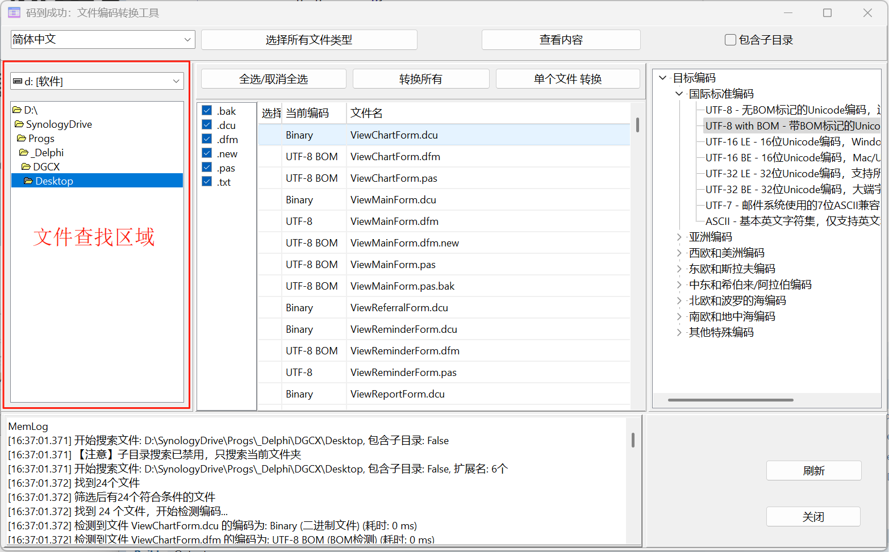
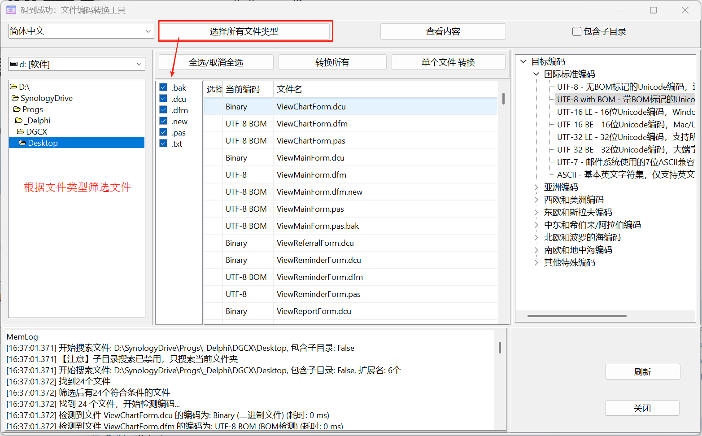
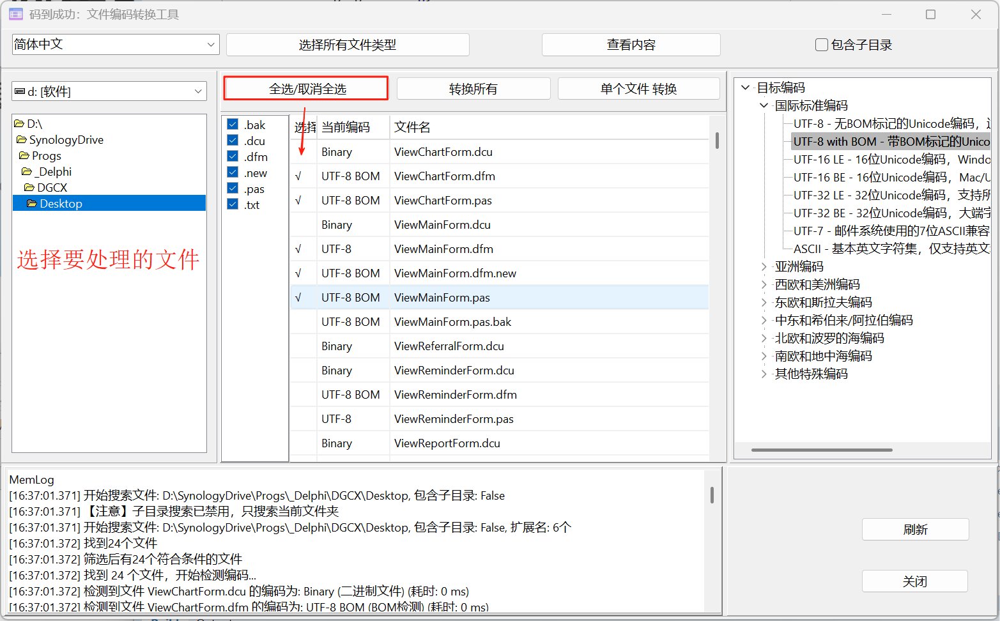
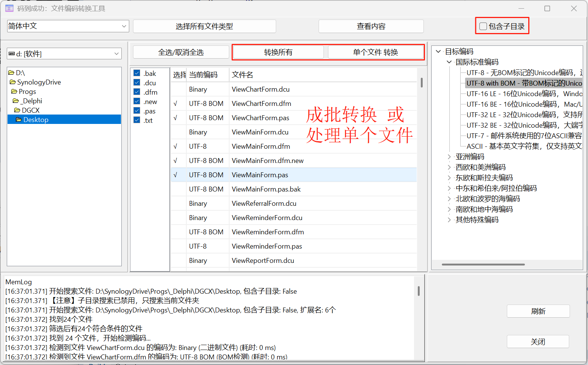
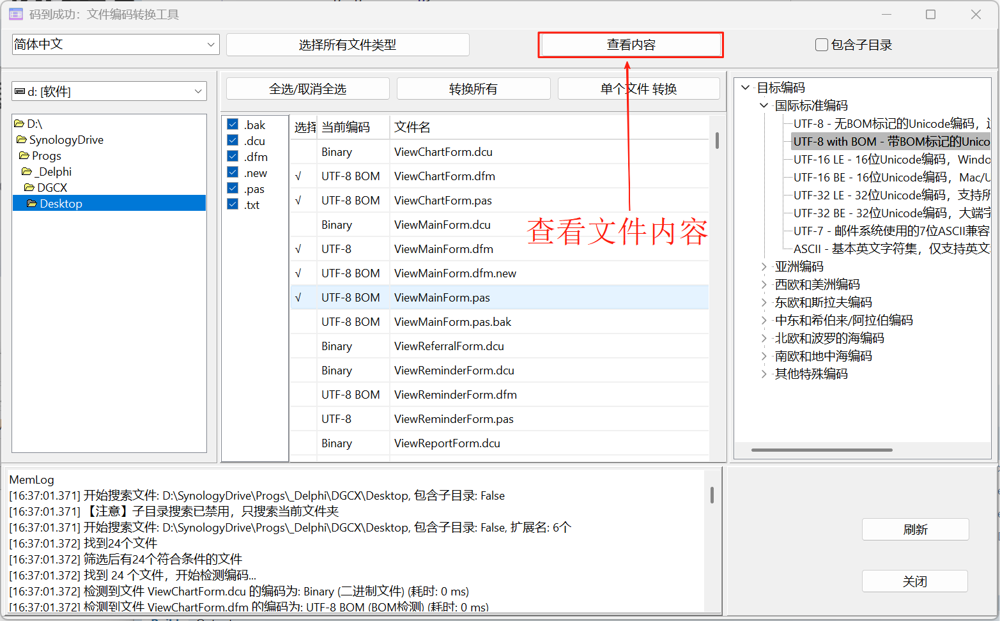

码到成功 DeepCharset
码到成功 - 让编码转换变得简单高效
码到成功(DeepCharset)提供丰富的功能，满足您的各种文件编码转换需求。
码到成功的操作流程简单直观，让编码转换变得轻松愉快：

在文件查找区域选择需要转换的文件或文件夹，支持拖拽操作

根据文件类型进行智能筛选，只处理需要的文件格式

可以单独选择要转换的文件，精确控制转换范围

选择批量转换或单个文件转换，一键完成编码转换

转换前后可查看文件内容，确保转换效果符合预期
码到成功支持近100种编码格式之间的转换，包括 UTF-8、UTF-16LE/BE、UTF-32LE/BE、GBK、GB18030、BIG5、GB2312、Shift-JIS、EUC-JP、ISO-8859 系列等，真正做到全面覆盖。
码到成功支持智能批量选择文件进行转换，大幅提高工作效率。可以按文件类型筛选，轻松处理大量文件。支持子目录递归处理和智能文件过滤，让批量操作变得简单。
采用全新改进的多层级编码检测算法，通过字节模式分析、统计特征识别和上下文验证，准确识别UTF-8、UTF-16、UTF-32、GBK、GB18030等多种编码格式。彻底解决了UTF-8文件被错误检测为ANSI的问题，支持混合内容智能检测，检测准确率提升至99%以上。
采用字节级精确控制的BOM处理技术，支持UTF-8、UTF-16LE/BE、UTF-32LE/BE的BOM添加与移除。通过CompareText字符串比较和二进制流操作，彻底修复了UTF-8与UTF-8+BOM互相转换的问题，确保100%转换成功率，满足各种严格编码规范要求。
转换前自动创建备份，确保数据安全，防止意外情况导致文件损坏。支持自定义备份策略和备份文件管理。
基于全新设计的TEncodingConverter_Improved转换引擎，采用流式处理和缓冲区优化技术，支持多种错误处理策略（抛出、替换、跳过、报告），提供毫秒级转换性能和精确的错误定位。通过TEncodingConversionOptions参数化配置，实现灵活可控的转换过程。
采用静态类设计模式（TEncodingBOMDetector_Improved、TUTF8EncodingDetector_Improved等），提高代码复用性和维护性，减少内存占用，优化性能。
精确处理UTF-16和UTF-32的大小端字节序（LE/BE），通过字节级操作确保跨平台兼容性和数据完整性。
实现了TEncodingConversionErrorHandlingStrategy错误处理策略，支持多种错误恢复机制，确保在遇到无效字符或编码错误时能够智能处理，最大程度保留有效数据。
通过TBytes和流式处理技术，优化内存使用，支持处理大型文件而不会导致内存溢出，保持稳定的性能表现。
集成了多层级编码验证系统，包括往返转换验证、特殊字符验证、BOM完整性检查和内容一致性比对。通过MilliSecondsBetween精确计时和二进制比对技术，确保转换过程的准确性和可靠性，支持对400+种编码组合的全面验证。
提供完整的转换报告系统，精确记录每个文件的转换过程、耗时统计和潜在问题。支持字节级错误定位，包含错误类型、位置和原因分析，便于开发者快速定位和解决编码问题。转换结果自动验证确保数据完整性。
支持将 SVG 矢量图形转换为 ICO 图标文件，方便创建应用程序图标。支持多种尺寸输出。
内置文件预览功能，可以在转换前查看文件内容，确保转换的必要性和正确性。支持语法高亮显示。
提供命令行接口，支持脚本和自动化操作，方便集成到开发流程中。支持批处理和参数化配置。
支持16种语言的界面显示，所有70+编码在所有语言中都有完整的翻译，满足全球用户的需求。
DeepCharset 支持多种编码格式之间的转换，通过改进的检测和转换算法确保99%以上的准确率，以下是主要支持的编码格式列表：
| 编码名称 | 描述 | 常用地区/语言 | BOM支持 |
|---|---|---|---|
| UTF-8 | Unicode 的可变长度字符编码，兼容 ASCII | 全球通用 | ✅ 完全支持 |
| UTF-16LE | 16 位 Unicode 转换格式，小端序 | Windows 系统内部使用 | ✅ 完全支持 |
| UTF-16BE | 16 位 Unicode 转换格式，大端序 | Java、macOS 等 | ✅ 完全支持 |
| UTF-32LE/BE | 32 位 Unicode 转换格式 | 特定应用场景 | ✅ 完全支持 |
| GBK | 汉字内码扩展规范 | 中国大陆 | ❌ 无BOM |
| GB18030 | 中国国家标准字符集，兼容 GB2312 和 GBK | 中国大陆 | ❌ 无BOM |
| BIG5 | 繁体中文字符集 | 台湾、香港 | ❌ 无BOM |
| Shift-JIS | 日文字符编码 | 日本 | ❌ 无BOM |
| EUC-JP/KR | 日文/韩文扩展 Unix 编码 | 日本/韩国 | ❌ 无BOM |
| ISO-8859 系列 | 拉丁字母表各部分 | 欧洲各国 | ❌ 无BOM |